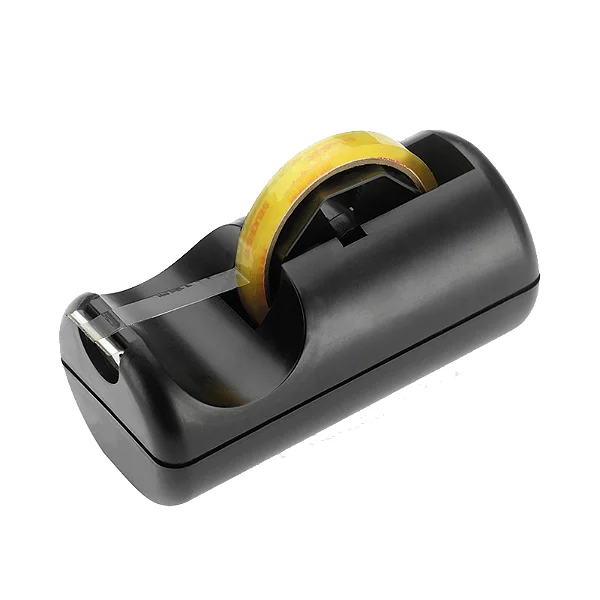

Um dia desses, na Escola Coronel José Levy você estava precisando de fita adesiva. Boatos diziam que a fita adesiva estaria na Sala 02 ou na Sala de Leitura
Na Sala 02 você descobre que a fita adesiva não está lá. Mas um dos alunos daquela sala te oferece um tubo de cola.
Na sala de leitura você descobre que a fita adesiva foi levada por algum funcionário da escola que pode ter levado para a secretaria ou para a sala da gestão. O que você faz?
Você faz uma melequeira danada com o tubo de cola e entrega um trabalho escolar todo cheio de garranchos e sujeira.
Na secretaria, a Bia te diz que a fita adesiva está no laboratório.
Você pergunta para a D. Erica sobre o rolo de fita adesiva. Mas antes de te responder, a D. Erica diz que você não entregou as atividades da plataforma "Tarefas" e te segura na sala da Gestão até você fazer todas as atividades.
:( :( Você perdeu :( :(
No Laboratório você finalmente encontra a fita adesiva!!!!